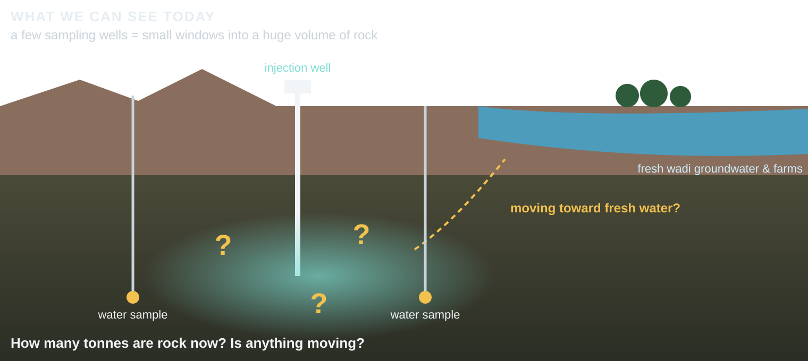

Fujairah is turning CO2 into rock. Nobody can weigh it yet.
The UAE has found a way to lock carbon away permanently. The hard part now is proving it, tonne by tonne.
A mountain that eats CO2
The Hajar mountains that run through Fujairah are made largely of peridotite, rock from deep inside the Earth that was pushed up to the surface. Its minerals react with CO2 and water to form solid carbonate, the same white veins you can see in the rocks of the East Coast.
Nature does this slowly. In 2023 the company 44.01, with ADNOC, the Fujairah Natural Resources Corporation and Masdar, started speeding it up: they capture CO2, dissolve it in seawater and pump it down a borehole into the peridotite. In the first pilot, 10 tonnes of CO2 turned into rock in under 100 days.

From air to stone in four steps
Capture
CO2 is taken from the air, or from the chimney of a cement plant.
Dissolve
The CO2 is mixed into seawater, so no fresh water is used.
Inject
The fizzy water is pumped down a borehole into the peridotite.
Mineralise
CO2 reacts with the rock and becomes carbonate. This is the step nobody can see.
From 10 tonnes to millions
Fujairah also has a large cement industry, one of the hardest industries to decarbonise. In 2026, Holcim UAE and 44.01 started a pilot to mineralise CO2 captured at a Fujairah cement plant.
Proof is the bottleneck
A tonne of stored carbon only counts toward the UAE’s net-zero goals, or earns a carbon credit, if it can be measured, reported and verified. Carbon credits are worth money, so the proof has to be trusted.
Today, mineralisation is checked mainly by sampling water from a few monitoring wells and by computer models of the rock. Each well is a small window into a huge volume of rock. Between the wells, nobody can see where the carbon went.
There is also a safety question. Fujairah’s farms use fresh groundwater from the wadis. If injected fluid moved somewhere unplanned, people would want to know early.

Comparing ways to check stored carbon
| Method | Sees the whole rock volume? | Continuous? | Measures mass directly? | Cost to repeat |
|---|---|---|---|---|
| Water samples from wells | No, single points | Every few weeks | Shows chemistry, not tonnes | Medium |
| Seismic surveys | Yes | No, one-off surveys | No | High |
| Computer models | Yes | Yes | No, only predictions | Low |
| Ordinary gravimeters | Yes | Drift over time | Yes | Medium |
| Q-MIZAN quantum gravimeters | Yes | Yes, 24/7, no drift | Yes | Low once installed |